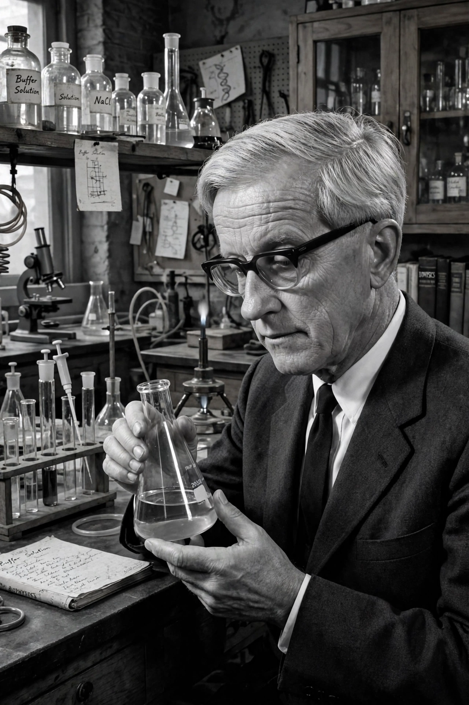

| Born | September 4, 1906, Berlin, German Empire |
|---|---|
| Died | March 9, 1981 (aged 74), Pasadena, California, U.S. |
| Education | University of Göttingen (PhD) |
| Known for | Phage group, Luria–Delbrück experiment, molecular biology |
| Awards | Nobel Prize in Physiology or Medicine (1969) |
| Institutions | Caltech, Vanderbilt University |

Max Ludwig Henning Delbrück (September 4, 1906 – March 9, 1981) was a German–American biophysicist who participated in launching the molecular biology research program in the late 1930s. He stimulated physical scientists' interest in biology, especially as to basic research to physically explain genes, mysterious at the time. Formed in 1945 and led by Delbrück along with Salvador Luria and Alfred Hershey, the "Phage Group" made major progress in molecular genetics.
Born in Berlin into an academic family — his father Hans Delbrück was a historian, and his brother Justus was executed for resistance activities against the Nazi regime — Delbrück studied physics at Göttingen, earning his doctorate in 1930. He worked with Niels Bohr in Copenhagen and Lise Meitner in Berlin before emigrating to the United States in 1937 on a Rockefeller fellowship as Nazi rule tightened.
At Caltech and later Vanderbilt, Delbrück turned bacteriophages — viruses that infect bacteria — into the model system for studying genes. With Salvador Luria he performed the famous Luria–Delbrück fluctuation experiment (1943), proving that mutations in bacteria arise randomly before selection rather than in response to it. He co-founded the Cold Spring Harbor phage course that trained a generation of molecular biologists, including participants in the Hershey–Chase experiment.
Delbrück shared the 1969 Nobel Prize in Physiology or Medicine with Luria and Alfred Hershey "for their discoveries concerning the replication mechanism and the genetic structure of viruses." Later he studied sensory transduction in the fungus Phycomyces. The Max Delbrück Center for Molecular Medicine in Berlin is named after him.
From Wikipedia, the free encyclopedia. Recreated from memory.